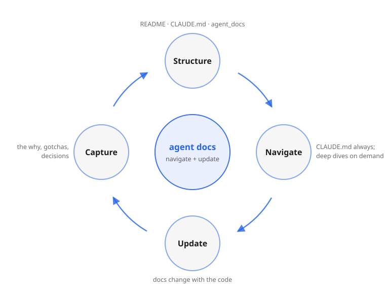

Structure a repository's documentation so AI coding agents navigate and update it efficiently.
A Claude Code skill that lays out a repo's docs so an agent pulls in exactly the context a task needs, without rereading the whole codebase or one sprawling instructions file. It's the model and the discipline, not a generator: advice an agent applies every time it touches the docs, from first setup through the daily upkeep that keeps them in sync as the code changes.

Agent docs fail in two directions. One giant CLAUDE.md burns context
on every turn and still buries the rule that mattered; scattering everything into
linked files saves context only when the agent follows the link, so the critical
warning goes silently missing. The fix is to split by what's safe to miss, and to
write down only what code can't carry: the why behind a constraint, the
trap that cost an hour, the approach already tried and rejected.
Three tiers, split by audience and by how much loads at once:
README.md — for humans: what it is, why, quick start.CLAUDE.md — the agent's "read first" entry point:
layout, conventions, invariants, gotchas, and a link index. Aliased to
AGENTS.md so other tools find it too.agent_docs/*.md — one topic per file, self-contained,
loaded only when that subsystem is touched.Progressive disclosure applied to a whole repo. The skill carries the rules that make it hold (one level deep, name by type, capture the why, point into the source and let code win on conflict, generate docs that can be generated), plus deep dives on each, an agent-facing writing style, and templates to start from. It scales the same way from a single repo up to a monorepo or a family of sibling projects. Read the full model.
Download and unzip into a Claude Code skills directory:
curl -L -o structuring-agent-docs.zip \ https://wistrand.github.io/structuring-agent-docs/structuring-agent-docs.zip # the zip wraps everything in a structuring-agent-docs/ directory, # so this creates ~/.claude/skills/structuring-agent-docs/SKILL.md unzip structuring-agent-docs.zip -d ~/.claude/skills/
Or clone and symlink:
git clone https://github.com/wistrand/structuring-agent-docs ln -s "$PWD/structuring-agent-docs" ~/.claude/skills/structuring-agent-docs
The agent loads it when you ask how to set up or reorganize CLAUDE.md,
AGENTS.md, or agent_docs/ for a repository.